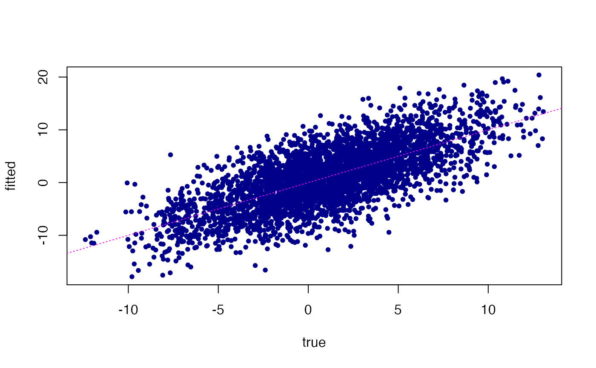
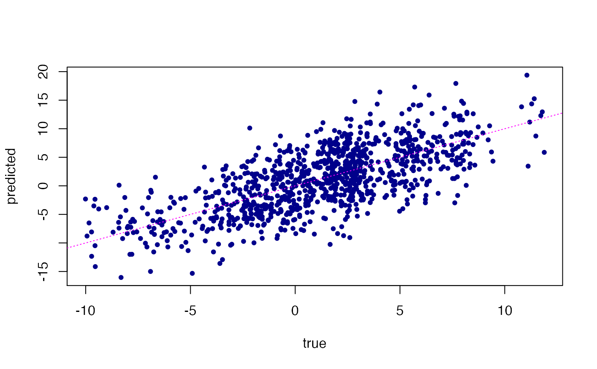

Performs multivariate multiple regression with mixture-of-normals prior.
mr.mash(
X,
Y,
S0,
w0 = rep(1/(length(S0)), length(S0)),
V = NULL,
mu1_init = matrix(0, nrow = ncol(X), ncol = ncol(Y)),
tol = 1e-04,
convergence_criterion = c("mu1", "ELBO"),
max_iter = 5000,
update_w0 = TRUE,
update_w0_method = "EM",
w0_threshold = 0,
compute_ELBO = TRUE,
standardize = TRUE,
verbose = TRUE,
update_V = FALSE,
update_V_method = c("full", "diagonal"),
version = c("Rcpp", "R"),
e = 1e-08,
ca_update_order = c("consecutive", "decreasing_logBF", "increasing_logBF"),
nthreads = as.integer(NA)
)n x p matrix of covariates.
n x r matrix of responses.
List of length K containing the desired r x r prior covariance matrices on the regression coefficients.
K-vector with prior mixture weights, each associated with
the respective covariance matrix in S0.
r x r residual covariance matrix.
p x r matrix of initial estimates of the posterior
mean regression coefficients. These should be on the same scale as
the X provided. If standardize=TRUE, mu1_init will be scaled
appropriately after standardizing X.
Convergence tolerance.
Criterion to use for convergence check.
Maximum number of iterations for the optimization algorithm.
If TRUE, prior weights are updated.
Method to update prior weights. Only EM is currently supported.
Drop mixture components with weight less than this value. Components are dropped at each iteration after 15 initial iterations. This is done to prevent from dropping some poetentially important components prematurely.
If TRUE, ELBO is computed.
If TRUE, X is "standardized" using the
sample means and sample standard deviations. Standardizing X
allows a faster implementation, but the prior has a different
interpretation. Coefficients and covariances are returned on the
original scale.
If TRUE, some information about the
algorithm's process is printed at each iteration.
if TRUE, residual covariance is updated.
Method to update residual covariance. So far,
"full" and "diagonal" are supported. If update_V=TRUE and V
is not provided by the user, this option will determine how V is
computed (and fixed) internally from mu1_init.
Whether to use R or C++ code to perform the coordinate ascent updates.
A small number to add to the diagonal elements of the prior matrices to improve numerical stability of the updates.
The order with which coordinates are updated. So far, "consecutive", "decreasing_logBF", "increasing_logBF" are supported.
Number of RcppParallel threads to use for the
updates. When nthreads is NA, the default number of
threads is used; see
defaultNumThreads. This setting is
ignored when version = "R".
A mr.mash fit, stored as a list with some or all of the following elements:
p x r matrix of posterior means for the regression coeffcients.
r x r x p array of posterior covariances for the regression coeffcients.
p x K matrix of posterior assignment probabilities to the mixture components.
r x r residual covariance matrix
K-vector with (updated, if update_w0=TRUE) prior mixture weights, each associated with
the respective covariance matrix in S0
.
r x r x K array of prior covariance matrices on the regression coefficients
.
r-vector containing posterior mean estimate of the intercept.
n x r matrix of fitted values.
r x r covariance matrix of fitted values.
r-vector of proportion of variance explained by the covariates.
Evidence Lower Bound (ELBO) at last iteration.
A data frame including information regarding convergence criteria at each iteration.
TRUE or FALSE, indicating whether
the optimization algorithm converged to a solution within the chosen tolerance
level.
n x r matrix of responses at last iteration (only relevant when missing values are present in the input Y).
###Set seed
set.seed(123)
###Simulate X and Y
##Set parameters
n <- 1000
p <- 100
p_causal <- 20
r <- 5
###Simulate data
out <- simulate_mr_mash_data(n, p, p_causal, r, pve=0.5, B_cor=1,
B_scale=1, X_cor=0, X_scale=1, V_cor=0)
###Split the data in training and test sets
Ytrain <- out$Y[-c(1:200), ]
Xtrain <- out$X[-c(1:200), ]
Ytest <- out$Y[c(1:200), ]
Xtest <- out$X[c(1:200), ]
###Specify the covariance matrices for the mixture-of-normals prior.
univ_sumstats <- compute_univariate_sumstats(Xtrain, Ytrain,
standardize=TRUE, standardize.response=FALSE)
grid <- autoselect.mixsd(univ_sumstats, mult=sqrt(2))^2
S0 <- compute_canonical_covs(ncol(Ytrain), singletons=TRUE,
hetgrid=c(0, 0.25, 0.5, 0.75, 1))
S0 <- expand_covs(S0, grid, zeromat=TRUE)
###Fit mr.mash
fit <- mr.mash(Xtrain, Ytrain, S0, update_V=TRUE)
#> Processing the inputs... Done!
#> Fitting the optimization algorithm using 8 RcppParallel threads...
#> iter mu1_max.diff ELBO_diff ELBO
#> 1 1.71e+00 Inf -1.17642528220990207046e+04
#> 2 3.16e-01 3.86e+02 -1.13785636762104713853e+04
#> 3 7.32e-02 2.38e+01 -1.13547399116407923430e+04
#> 4 2.64e-02 2.75e+00 -1.13519874874270262808e+04
#> 5 1.63e-02 1.28e+00 -1.13507113822810133570e+04
#> 6 1.23e-02 7.76e-01 -1.13499353149131511600e+04
#> 7 9.55e-03 5.23e-01 -1.13494120998063335719e+04
#> 8 7.63e-03 3.77e-01 -1.13490351417299498280e+04
#> 9 6.23e-03 2.85e-01 -1.13487496678169627558e+04
#> 10 5.18e-03 2.25e-01 -1.13485247734950498852e+04
#> 11 4.38e-03 1.83e-01 -1.13483418476869410370e+04
#> 12 3.76e-03 1.53e-01 -1.13481890954040354700e+04
#> 13 3.27e-03 1.30e-01 -1.13480587207075150218e+04
#> 14 2.87e-03 1.13e-01 -1.13479453863624330552e+04
#> 15 2.54e-03 1.00e-01 -1.13478453286182557349e+04
#> 16 2.27e-03 8.95e-02 -1.13477558262726124667e+04
#> 17 2.05e-03 8.10e-02 -1.13476748699693489471e+04
#> 18 1.86e-03 7.39e-02 -1.13476009491374643403e+04
#> 19 1.70e-03 6.80e-02 -1.13475329105017372058e+04
#> 20 1.56e-03 6.30e-02 -1.13474698615490669908e+04
#> 21 1.44e-03 5.88e-02 -1.13474111030748626945e+04
#> 22 1.34e-03 5.50e-02 -1.13473560810572562332e+04
#> 23 1.24e-03 5.17e-02 -1.13473043517017777049e+04
#> 24 1.16e-03 4.88e-02 -1.13472555556662573508e+04
#> 25 1.15e-03 4.62e-02 -1.13472093988159122091e+04
#> 26 1.14e-03 4.38e-02 -1.13471656377071776660e+04
#> 27 1.13e-03 4.16e-02 -1.13471240685484717687e+04
#> 28 1.11e-03 3.95e-02 -1.13470845187506129150e+04
#> 29 1.09e-03 3.77e-02 -1.13470468404263901903e+04
#> 30 1.06e-03 3.59e-02 -1.13470109053693431633e+04
#> 31 1.03e-03 3.43e-02 -1.13469766011625943065e+04
#> 32 9.99e-04 3.28e-02 -1.13469438281548755185e+04
#> 33 9.66e-04 3.13e-02 -1.13469124971045657730e+04
#> 34 9.32e-04 3.00e-02 -1.13468825273393031239e+04
#> 35 8.97e-04 2.87e-02 -1.13468538453142646176e+04
#> 36 8.62e-04 2.75e-02 -1.13468263834788249369e+04
#> 37 8.45e-04 2.63e-02 -1.13468000793820210674e+04
#> 38 8.27e-04 2.52e-02 -1.13467748749628517544e+04
#> 39 8.08e-04 2.42e-02 -1.13467507159838860389e+04
#> 40 7.88e-04 2.32e-02 -1.13467275515757955873e+04
#> 41 7.69e-04 2.22e-02 -1.13467053338681453170e+04
#> 42 7.48e-04 2.13e-02 -1.13466840176871337462e+04
#> 43 7.28e-04 2.05e-02 -1.13466635603056383843e+04
#> 44 7.08e-04 1.96e-02 -1.13466439212341210805e+04
#> 45 6.87e-04 1.89e-02 -1.13466250620438004262e+04
#> 46 6.67e-04 1.81e-02 -1.13466069462152881897e+04
#> 47 6.46e-04 1.74e-02 -1.13465895390076802869e+04
#> 48 6.26e-04 1.67e-02 -1.13465728073440150183e+04
#> 49 6.06e-04 1.61e-02 -1.13465567197101463535e+04
#> 50 5.86e-04 1.55e-02 -1.13465412460646330146e+04
#> 51 5.67e-04 1.49e-02 -1.13465263577577770775e+04
#> 52 5.48e-04 1.43e-02 -1.13465120274583478022e+04
#> 53 5.29e-04 1.38e-02 -1.13464982290868847485e+04
#> 54 5.10e-04 1.33e-02 -1.13464849377545324387e+04
#> 55 4.92e-04 1.28e-02 -1.13464721297067571868e+04
#> 56 4.74e-04 1.23e-02 -1.13464597822712294146e+04
#> 57 4.57e-04 1.19e-02 -1.13464478738093566790e+04
#> 58 4.40e-04 1.15e-02 -1.13464363836710472242e+04
#> 59 4.23e-04 1.11e-02 -1.13464252921522602264e+04
#> 60 4.07e-04 1.07e-02 -1.13464145804550516914e+04
#> 61 3.91e-04 1.03e-02 -1.13464042306498577091e+04
#> 62 3.76e-04 1.00e-02 -1.13463942256396603625e+04
#> 63 3.61e-04 9.68e-03 -1.13463845491259417031e+04
#> 64 3.47e-04 9.36e-03 -1.13463751855761802290e+04
#> 65 3.32e-04 9.07e-03 -1.13463661201927116053e+04
#> 66 3.19e-04 8.78e-03 -1.13463573388829008763e+04
#> 67 3.06e-04 8.51e-03 -1.13463488282303715096e+04
#> 68 2.93e-04 8.25e-03 -1.13463405754673603951e+04
#> 69 2.80e-04 8.01e-03 -1.13463325684479787014e+04
#> 70 2.68e-04 7.77e-03 -1.13463247956223913206e+04
#> 71 2.57e-04 7.55e-03 -1.13463172460118166782e+04
#> 72 2.45e-04 7.34e-03 -1.13463099091843414499e+04
#> 73 2.34e-04 7.13e-03 -1.13463027752314555983e+04
#> 74 2.24e-04 6.94e-03 -1.13462958347453786700e+04
#> 75 2.14e-04 6.76e-03 -1.13462890787970027304e+04
#> 76 2.04e-04 6.58e-03 -1.13462824989146174630e+04
#> 77 1.95e-04 6.41e-03 -1.13462760870632264414e+04
#> 78 1.86e-04 6.25e-03 -1.13462698356246091862e+04
#> 79 1.80e-04 6.10e-03 -1.13462637373779398331e+04
#> 80 1.74e-04 5.95e-03 -1.13462577854811788711e+04
#> 81 1.69e-04 5.81e-03 -1.13462519734529741982e+04
#> 82 1.65e-04 5.68e-03 -1.13462462951552934101e+04
#> 83 1.60e-04 5.55e-03 -1.13462407447766581754e+04
#> 84 1.55e-04 5.43e-03 -1.13462353168159825145e+04
#> 85 1.51e-04 5.31e-03 -1.13462300060670477251e+04
#> 86 1.47e-04 5.20e-03 -1.13462248076035775739e+04
#> 87 1.43e-04 5.09e-03 -1.13462197167649392213e+04
#> 88 1.38e-04 4.99e-03 -1.13462147291423789284e+04
#> 89 1.35e-04 4.89e-03 -1.13462098405659016862e+04
#> 90 1.31e-04 4.79e-03 -1.13462050470916674385e+04
#> 91 1.27e-04 4.70e-03 -1.13462003449899821135e+04
#> 92 1.23e-04 4.61e-03 -1.13461957307338107057e+04
#> 93 1.20e-04 4.53e-03 -1.13461912009878160461e+04
#> 94 1.17e-04 4.45e-03 -1.13461867525979323545e+04
#> 95 1.13e-04 4.37e-03 -1.13461823825814226439e+04
#> 96 1.10e-04 4.29e-03 -1.13461780881174290698e+04
#> 97 1.13e-04 4.22e-03 -1.13461738665379671147e+04
#> 98 1.17e-04 4.15e-03 -1.13461697153194236307e+04
#> 99 1.20e-04 4.08e-03 -1.13461656320744168625e+04
#> 100 1.23e-04 4.02e-03 -1.13461616145441457775e+04
#> 101 1.25e-04 3.95e-03 -1.13461576605910940998e+04
#> 102 1.28e-04 3.89e-03 -1.13461537681921363401e+04
#> 103 1.30e-04 3.83e-03 -1.13461499354320185375e+04
#> 104 1.32e-04 3.77e-03 -1.13461461604971573252e+04
#> 105 1.34e-04 3.72e-03 -1.13461424416698519053e+04
#> 106 1.36e-04 3.66e-03 -1.13461387773226997524e+04
#> 107 1.38e-04 3.61e-03 -1.13461351659134415968e+04
#> 108 1.40e-04 3.56e-03 -1.13461316059800064977e+04
#> 109 1.41e-04 3.51e-03 -1.13461280961358843342e+04
#> 110 1.43e-04 3.46e-03 -1.13461246350657256698e+04
#> 111 1.44e-04 3.41e-03 -1.13461212215212126466e+04
#> 112 1.45e-04 3.37e-03 -1.13461178543171663478e+04
#> 113 1.46e-04 3.32e-03 -1.13461145323278597061e+04
#> 114 1.47e-04 3.28e-03 -1.13461112544835632434e+04
#> 115 1.48e-04 3.23e-03 -1.13461080197672654322e+04
#> 116 1.48e-04 3.19e-03 -1.13461048272115967848e+04
#> 117 1.49e-04 3.15e-03 -1.13461016758959467552e+04
#> 118 1.50e-04 3.11e-03 -1.13460985649437061511e+04
#> 119 1.50e-04 3.07e-03 -1.13460954935197078157e+04
#> 120 1.50e-04 3.03e-03 -1.13460924608278055530e+04
#> 121 1.51e-04 2.99e-03 -1.13460894661085912958e+04
#> 122 1.51e-04 2.96e-03 -1.13460865086372159567e+04
#> 123 1.51e-04 2.92e-03 -1.13460835877214140055e+04
#> 124 1.51e-04 2.89e-03 -1.13460807026995498745e+04
#> 125 1.51e-04 2.85e-03 -1.13460778529388408060e+04
#> 126 1.51e-04 2.82e-03 -1.13460750378336724680e+04
#> 127 1.50e-04 2.78e-03 -1.13460722568039709586e+04
#> 128 1.50e-04 2.75e-03 -1.13460695092937457957e+04
#> 129 1.50e-04 2.71e-03 -1.13460667947696310875e+04
#> 130 1.49e-04 2.68e-03 -1.13460641127195776789e+04
#> 131 1.49e-04 2.65e-03 -1.13460614626515998680e+04
#> 132 1.49e-04 2.62e-03 -1.13460588440925548639e+04
#> 133 1.48e-04 2.59e-03 -1.13460562565870804974e+04
#> 134 1.47e-04 2.56e-03 -1.13460536996965020080e+04
#> 135 1.47e-04 2.53e-03 -1.13460511729978443327e+04
#> 136 1.46e-04 2.50e-03 -1.13460486760829226114e+04
#> 137 1.45e-04 2.47e-03 -1.13460462085574436060e+04
#> 138 1.45e-04 2.44e-03 -1.13460437700401598704e+04
#> 139 1.44e-04 2.41e-03 -1.13460413601621185080e+04
#> 140 1.43e-04 2.38e-03 -1.13460389785659099289e+04
#> 141 1.42e-04 2.35e-03 -1.13460366249049620819e+04
#> 142 1.41e-04 2.33e-03 -1.13460342988429001707e+04
#> 143 1.40e-04 2.30e-03 -1.13460320000529100071e+04
#> 144 1.39e-04 2.27e-03 -1.13460297282171795814e+04
#> 145 1.38e-04 2.25e-03 -1.13460274830263297190e+04
#> 146 1.37e-04 2.22e-03 -1.13460252641788993060e+04
#> 147 1.36e-04 2.19e-03 -1.13460230713808668952e+04
#> 148 1.35e-04 2.17e-03 -1.13460209043451941398e+04
#> 149 1.34e-04 2.14e-03 -1.13460187627913692268e+04
#> 150 1.33e-04 2.12e-03 -1.13460166464450176136e+04
#> 151 1.32e-04 2.09e-03 -1.13460145550375273160e+04
#> 152 1.31e-04 2.07e-03 -1.13460124883056687395e+04
#> 153 1.30e-04 2.04e-03 -1.13460104459912581660e+04
#> 154 1.29e-04 2.02e-03 -1.13460084278408448881e+04
#> 155 1.28e-04 1.99e-03 -1.13460064336054219893e+04
#> 156 1.27e-04 1.97e-03 -1.13460044630401116592e+04
#> 157 1.25e-04 1.95e-03 -1.13460025159039360005e+04
#> 158 1.24e-04 1.92e-03 -1.13460005919595405430e+04
#> 159 1.23e-04 1.90e-03 -1.13459986909729850595e+04
#> 160 1.22e-04 1.88e-03 -1.13459968127135070972e+04
#> 161 1.21e-04 1.86e-03 -1.13459949569533200702e+04
#> 162 1.19e-04 1.83e-03 -1.13459931234674386360e+04
#> 163 1.18e-04 1.81e-03 -1.13459913120334786072e+04
#> 164 1.17e-04 1.79e-03 -1.13459895224315023370e+04
#> 165 1.16e-04 1.77e-03 -1.13459877544438604673e+04
#> 166 1.14e-04 1.75e-03 -1.13459860078550482285e+04
#> 167 1.13e-04 1.73e-03 -1.13459842824515744724e+04
#> 168 1.12e-04 1.70e-03 -1.13459825780218197906e+04
#> 169 1.11e-04 1.68e-03 -1.13459808943559455656e+04
#> 170 1.09e-04 1.66e-03 -1.13459792312457830121e+04
#> 171 1.08e-04 1.64e-03 -1.13459775884847003908e+04
#> 172 1.07e-04 1.62e-03 -1.13459759658675611718e+04
#> 173 1.06e-04 1.60e-03 -1.13459743631906167138e+04
#> 174 1.05e-04 1.58e-03 -1.13459727802514189534e+04
#> 175 1.03e-04 1.56e-03 -1.13459712168487676536e+04
#> 176 1.02e-04 1.54e-03 -1.13459696727826503775e+04
#> 177 1.01e-04 1.52e-03 -1.13459681478541679098e+04
#> 178 9.98e-05 1.51e-03 -1.13459666418654851441e+04
#> Done!
#> Processing the outputs... Done!
#> mr.mash successfully executed in 0.0708061 minutes!
# Compare the "fitted" values of Y against the true Y in the training set.
plot(fit$fitted,Ytrain,pch = 20,col = "darkblue",xlab = "true",
ylab = "fitted")
abline(a = 0,b = 1,col = "magenta",lty = "dotted")

# Predict the multivariate outcomes in the test set using the fitted model.
Ytest_est <- predict(fit,Xtest)
plot(Ytest_est,Ytest,pch = 20,col = "darkblue",xlab = "true",
ylab = "predicted")
abline(a = 0,b = 1,col = "magenta",lty = "dotted")
